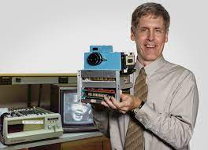

Les débuts de la photographie
Le concept de ce qui est aujourd'hui connu sous le nom de photographie a été créé au courant du XIXe siècle, attribué à Joseph Nicéphore Niépce et Louis Daguerre (qui donna son nom au daguérréotype).
La photographie fonctionne ainsi :
- La lumière entre par l'objectif, puis passe par une lentille avant de se focaliser sur une pellicule spéciale.
- Cette pellicule, composée d'un film plastique, mais surtout d'une fine couche de cristaux d'halogénure d'argent (le plus couramment) qui réagissent à la lumière, créant une image latente.
- On récupère ainsi une image en niveaux de gris, qu'il faut développer pour révéler l'image : des produits chimiques spécifiques sont utilisés afin de transformer changer la couleur des cristaux exposés.
- D'autres bains sont aussi utilisés, afin de stabiliser la réaction, et enfin, obtenir une image fixe.
La première photo numérique
Un siècle et demi plus tard, en 1975, Kodak, une entreprise américaine aujourd'hui mondialement connue dans le domaine de la photographie, invente le capteur CCD (Charge-Coupled Device) Kodak.
Ce capteur était capable de capturer des images, seulement en niveaux de gris, avec une matrice qui enregistrait les images avec une définition de 100x100 pixels.

Fonctionnement du capteur numérique
La photographie numérique de nos jours
L'appareil photo contemporain est très différent de celui des années 90. Les nouvelles technologies, liées aux innovations du domaine de la photographie ont amené à la démocratisation de l'appareil photographique à la maison, et même, ces dernières décennies, dans les poches, sur les smartphones.
Aujourd'hui les appareils photo, offrent une résolution bien meilleure qu'auparavant, permettant la prise de photos très détaillées.
Avec la photographie numérique, il est aussi possible de prévisualiser immédiatement les images avant la capture, permettant de vérifier la composition, la mise au point et les paramètres d'exposition, offrant ainsi un large panel de possibilités de modification des paramètres, de retouches, ou de refaire une prise, ce qui était impossible avec un appareil argentique.
Mais surtout, la photo numérique donne l'accès aux algorithmes post-traitement, améliorant grandement la qualité d'une photographie.